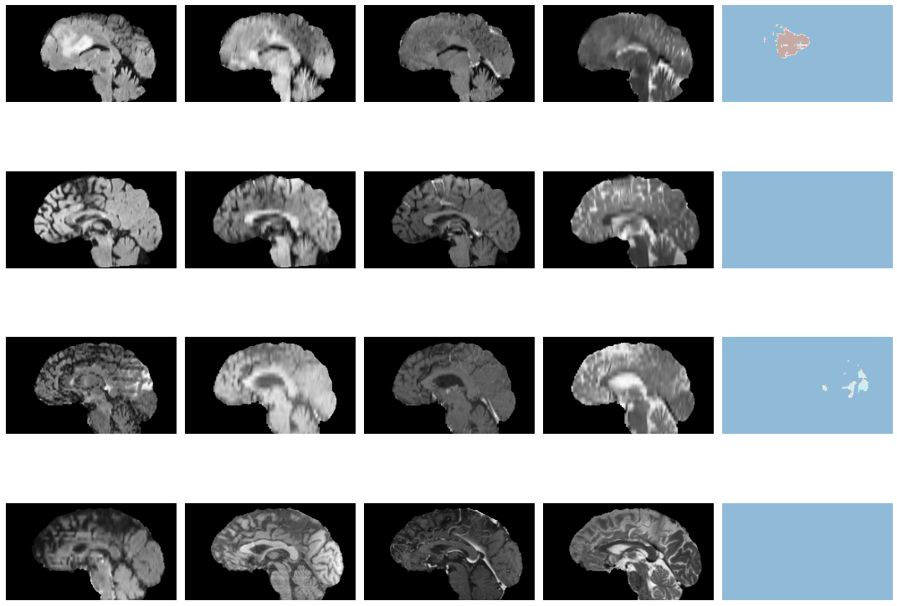
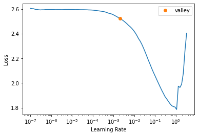
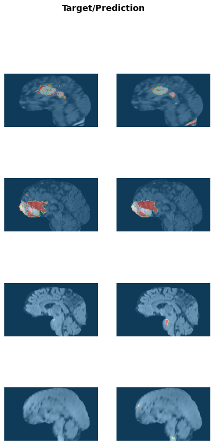
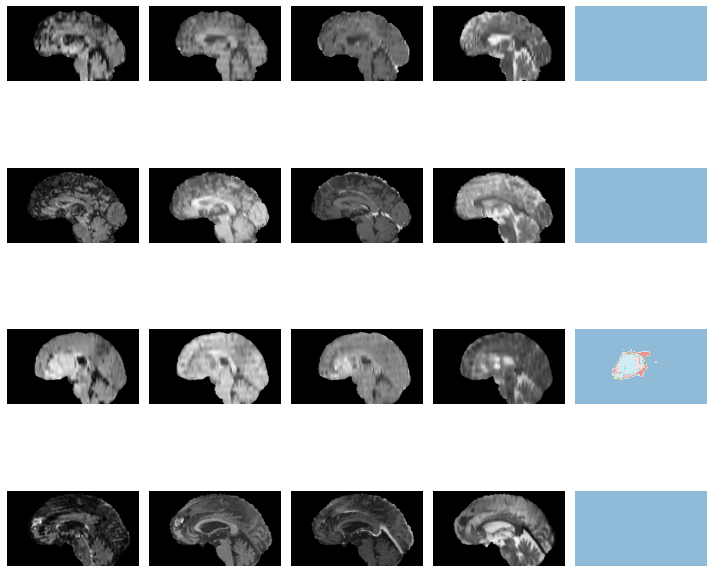
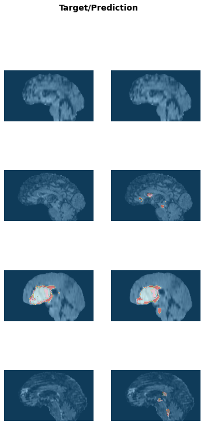

from fastMONAI.vision_all import *
from monai.apps import DecathlonDataset
from sklearn.model_selection import train_test_splitMulti-class semantic segmentation
For the multi-class semantic segmentation task, we will use the brain tumors dataset from the Medical Segmentation Decathlon challenge (http://medicaldecathlon.com/). The data is collected from the Multimodal Brain Tumor Image Segmentation Benchmark Challenge (BraTS) dataset from 2016 and 2017. The task is to segment tumors into three different subregions (active tumor (AT), necrotic core (NCR), and peritumoral edematous/infiltrated tissue (ED)) from multimodal multisite MRI data (T1w, T1ce, T2w, and FLAIR). The challenge with this dataset is the brain tumors’ highly heterogeneous appearance and shape.

Download external data
We use the MONAI function DecathlonDataset to download the data and generate items for training.
path = Path('../data')
path.mkdir(exist_ok=True)training_data = DecathlonDataset(root_dir=path, task="Task01_BrainTumour", section="training", download=True,
cache_num=0, num_workers=3)2022-09-01 17:36:43,099 - INFO - Verified 'Task01_BrainTumour.tar', md5: 240a19d752f0d9e9101544901065d872.
2022-09-01 17:36:43,100 - INFO - File exists: ../data/Task01_BrainTumour.tar, skipped downloading.
2022-09-01 17:36:43,101 - INFO - Non-empty folder exists in ../data/Task01_BrainTumour, skipped extracting.df = pd.DataFrame(training_data.data)
df.shape(388, 2)Split the labled data into training and test
train_df, test_df = train_test_split(df, test_size=0.1, random_state=42)
train_df.shape, test_df.shape((349, 2), (39, 2))Look at training data
med_dataset = MedDataset(img_list=train_df.label.tolist(), dtype=MedMask, max_workers=12)med_dataset.df.head()| path | dim_0 | dim_1 | dim_2 | voxel_0 | voxel_1 | voxel_2 | orientation | voxel_count_0 | voxel_count_1 | voxel_count_2 | voxel_count_3 | |
|---|---|---|---|---|---|---|---|---|---|---|---|---|
| 0 | /home/sathiesh/lib_dev/fastMONAI/data/Task01_BrainTumour/labelsTr/BRATS_477.nii.gz | 240 | 240 | 155 | 1.0 | 1.0 | 1.0 | RAS+ | 8765377 | 83088 | 15826 | 63709.0 |
| 1 | /home/sathiesh/lib_dev/fastMONAI/data/Task01_BrainTumour/labelsTr/BRATS_350.nii.gz | 240 | 240 | 155 | 1.0 | 1.0 | 1.0 | RAS+ | 8872636 | 21364 | 8872 | 25128.0 |
| 2 | /home/sathiesh/lib_dev/fastMONAI/data/Task01_BrainTumour/labelsTr/BRATS_266.nii.gz | 240 | 240 | 155 | 1.0 | 1.0 | 1.0 | RAS+ | 8725071 | 83276 | 69784 | 49869.0 |
| 3 | /home/sathiesh/lib_dev/fastMONAI/data/Task01_BrainTumour/labelsTr/BRATS_294.nii.gz | 240 | 240 | 155 | 1.0 | 1.0 | 1.0 | RAS+ | 8790699 | 90806 | 20231 | 26264.0 |
| 4 | /home/sathiesh/lib_dev/fastMONAI/data/Task01_BrainTumour/labelsTr/BRATS_466.nii.gz | 240 | 240 | 155 | 1.0 | 1.0 | 1.0 | RAS+ | 8911252 | 14046 | 60 | 2642.0 |
summary_df = med_dataset.summary()summary_df.head()| dim_0 | dim_1 | dim_2 | voxel_0 | voxel_1 | voxel_2 | orientation | example_path | total | |
|---|---|---|---|---|---|---|---|---|---|
| 0 | 240 | 240 | 155 | 1.0 | 1.0 | 1.0 | RAS+ | /home/sathiesh/lib_dev/fastMONAI/data/Task01_BrainTumour/labelsTr/BRATS_002.nii.gz | 349 |
resample, reorder = med_dataset.suggestion()
resample, reorder([1.0, 1.0, 1.0], False)img_size = med_dataset.get_largest_img_size(resample=resample)
img_size[240.0, 240.0, 155.0]bs=4
size=[224,224,128]item_tfms = [ZNormalization(), PadOrCrop(size), RandomAffine(scales=0, degrees=5, isotropic=True)]dblock = MedDataBlock(blocks=(ImageBlock(cls=MedImage), MedMaskBlock),
splitter=RandomSplitter(seed=42),
get_x=ColReader('image'),
get_y=ColReader('label'),
item_tfms=item_tfms,
reorder=reorder,
resample=resample)dls = dblock.dataloaders(train_df, bs=bs)# training and validation
len(dls.train_ds.items), len(dls.valid_ds.items)(280, 69)dls.show_batch(anatomical_plane=0)
Create and train a 3D model
As in the binary segmentation task, we import an enhanced version of UNet from MONAI. This time instead of using Dice loss, we import a loss function that combines Dice loss and Cross Entropy loss and returns the weighted sum of these two losses.
from monai.losses import DiceCELoss
from monai.networks.nets import UNetcodes = np.unique(med_img_reader(train_df.label.tolist()[0]))
n_classes = len(codes)
codes, n_classes(array([0., 1., 2., 3.], dtype=float32), 4)model = UNet(dimensions=3, in_channels=4, out_channels=n_classes, channels=(16, 32, 64, 128, 256),strides=(2, 2, 2, 2), num_res_units=2)
model = modelloss_func = CustomLoss(loss_func=DiceCELoss(to_onehot_y=True, include_background=True, softmax=True))learn = Learner(dls, model, loss_func=loss_func, opt_func=ranger, metrics=multi_dice_score)#.to_fp16()learn.lr_find()SuggestedLRs(valley=0.0020892962347716093)
lr = 1e-1learn.fit_flat_cos(20 ,lr)| epoch | train_loss | valid_loss | multi_dice_score | time |
|---|---|---|---|---|
| 0 | 0.731845 | 0.639536 | tensor([0.4518, 0.0668, 0.2126]) | 01:35 |
| 1 | 0.607809 | 0.513107 | tensor([0.4640, 0.1777, 0.5614]) | 01:38 |
| 2 | 0.519589 | 0.469945 | tensor([0.5452, 0.3205, 0.5655]) | 01:42 |
| 3 | 0.491277 | 0.432317 | tensor([0.6120, 0.2937, 0.6087]) | 01:43 |
| 4 | 0.447122 | 0.436939 | tensor([0.6344, 0.2947, 0.5832]) | 01:40 |
| 5 | 0.438858 | 0.399160 | tensor([0.6423, 0.3719, 0.6272]) | 01:37 |
| 6 | 0.428492 | 0.395152 | tensor([0.6066, 0.4034, 0.6307]) | 01:38 |
| 7 | 0.430274 | 0.439361 | tensor([0.5118, 0.3754, 0.6161]) | 01:42 |
| 8 | 0.430529 | 0.396985 | tensor([0.6117, 0.4036, 0.6407]) | 01:37 |
| 9 | 0.426335 | 0.397388 | tensor([0.5862, 0.4063, 0.6515]) | 01:43 |
| 10 | 0.405544 | 0.410180 | tensor([0.5997, 0.3905, 0.6501]) | 01:38 |
| 11 | 0.404089 | 0.375698 | tensor([0.6476, 0.4064, 0.6567]) | 01:38 |
| 12 | 0.410570 | 0.397038 | tensor([0.6492, 0.3614, 0.6325]) | 01:36 |
| 13 | 0.398087 | 0.422734 | tensor([0.5770, 0.4029, 0.5979]) | 01:38 |
| 14 | 0.410939 | 0.380410 | tensor([0.6152, 0.4226, 0.6542]) | 01:41 |
| 15 | 0.400566 | 0.413136 | tensor([0.5845, 0.4104, 0.6108]) | 01:37 |
| 16 | 0.395092 | 0.360473 | tensor([0.6729, 0.4272, 0.6761]) | 01:38 |
| 17 | 0.368555 | 0.350397 | tensor([0.6723, 0.4393, 0.6917]) | 01:40 |
| 18 | 0.348801 | 0.352961 | tensor([0.6729, 0.4536, 0.6669]) | 01:36 |
| 19 | 0.338820 | 0.342739 | tensor([0.6730, 0.4586, 0.7052]) | 01:40 |
learn.save('braintumor-model')Path('models/braintumor-model.pth')learn.show_results(anatomical_plane=0, ds_idx=1)
Inference on test data
learn.load('braintumor-model');test_dl = learn.dls.test_dl(test_df[:10],with_labels=True)test_dl.show_batch(anatomical_plane=0, figsize=(10,10))
pred_acts, labels = learn.get_preds(dl=test_dl)
pred_acts.shape, labels.shape(torch.Size([10, 4, 224, 224, 128]), torch.Size([10, 1, 224, 224, 128]))Dice score for labels 1,2 and 3:
multi_dice_score(pred_acts, labels)tensor([0.5708, 0.4186, 0.6994])learn.show_results(anatomical_plane=0, dl=test_dl)
Export learner
from fastMONAI.vision_utils import *store_variables(pkl_fn='vars.pkl', var_vals=[reorder, resample])learn.export('braintumor_model.pkl')